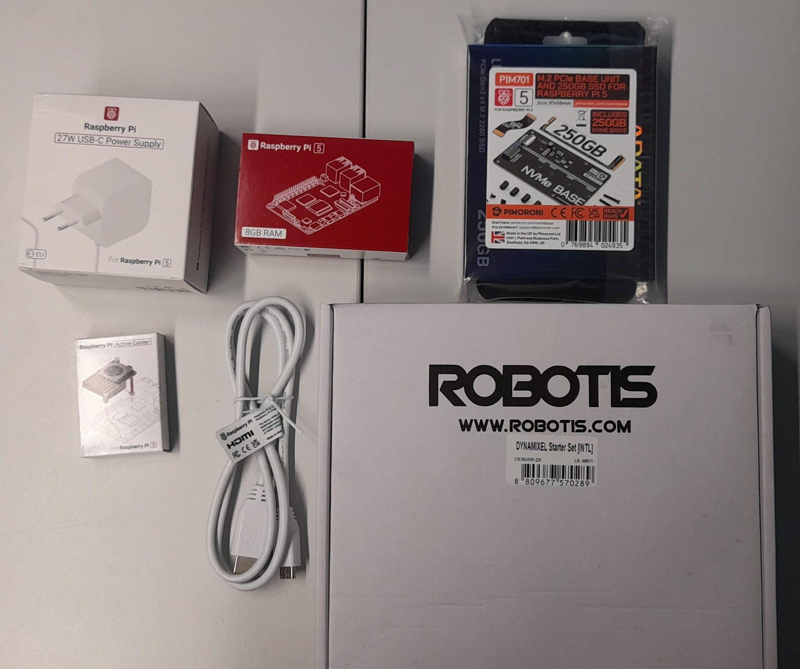
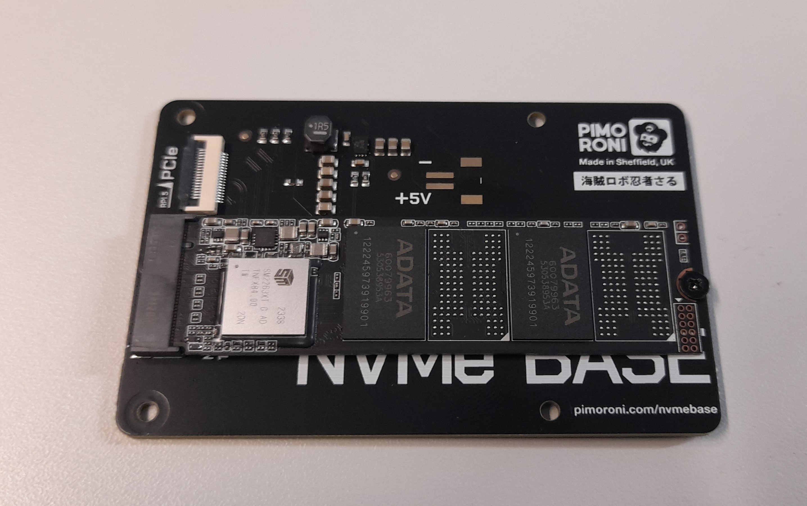
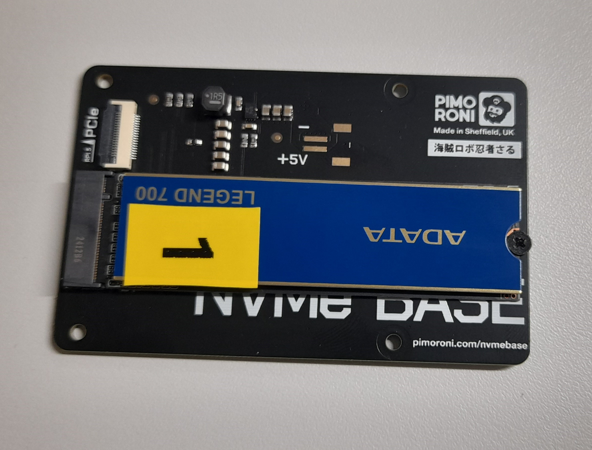
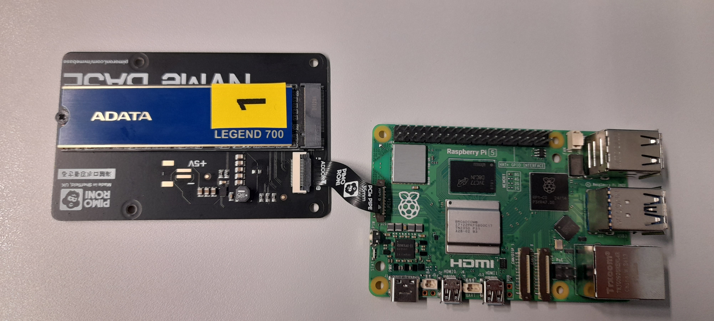
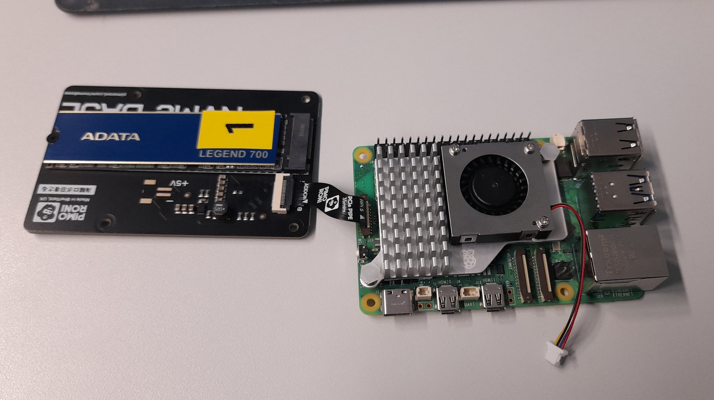
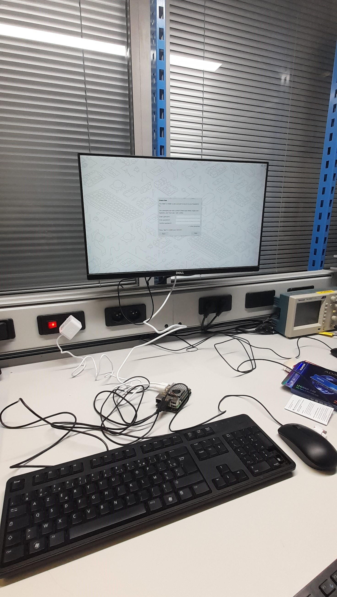
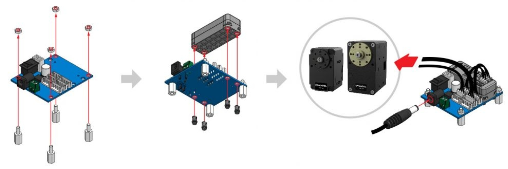

Prise en main du matériel
Introduction
Liste des Composants
Voici les composants nécessaires pour ce montage :
{kind=link}

Ensemble des composants nécessaires pour le montage
Raspberry Pi 5 : Le cerveau du système, chargé de contrôler les moteurs Dynamixel.
Raspberry Pi Active Cooler : Un système de refroidissement actif pour maintenir la température de la Raspberry Pi 5.
M.2 PCIe Base Unit et SSD 250 Go : Pour le stockage et l’amélioration des performances du système.
Alimentation 27W : Une alimentation suffisamment puissante pour la Raspberry Pi 5 et les périphériques connectés.
Starter Set Dynamixel : Un ensemble de moteurs Dynamixel, un contrôleur et les câbles nécessaires.
Câbles et connecteurs : Pour relier les composants entre eux.
Carte SD (optionnelle) : Pour remplacer la SSD pour le système d’exploitation si besoin.
Notice de Montage
Étape 1 : Préparation de la Raspberry Pi 5
Installez le SSD M.2 :
Insérez le SSD M.2 dans la base unit PCIe.

Base unit PCIe avant installation du SSD M.2

Base unit PCIe avec SSD M.2
Connectez la base unit PCIe au port PCIe de la Raspberry Pi 5.
Prudence
Assurer vous que la nappe soit dans le bon sens avant de réaliser la connexion

Liasion de la base unit PCIe et de la Raspberry Pi 5
Installez le Raspberry Pi Active Cooler :
Fixez le dissipateur thermique sur le processeur de la Raspberry Pi 5.
Montez le ventilateur sur le dissipateur en suivant les instructions du fabricant.
Connectez le câble d’alimentation du ventilateur au port GPIO dédié sur la Raspberry Pi 5.

Installation de la Raspberry Pi Active Cooler
Installez le système d’exploitation :
Si vous utilisez le SSD, installez le système d’exploitation (ici Ubuntu) sur le SSD via un autre ordinateur. Pour cela, vous pouvez suivre les instructions de la section Installation d’Ubuntu sur le Raspberry Pi 5.
Si vous utilisez une carte SD, insérez-la dans le slot dédié de la Raspberry Pi 5.
Installation de ROS2
{kind=link}
{kind=link}
{kind=link}
{kind=link}
Suivez les instructions de la section Installation de ROS2 sur le Raspberry Pi 5 pour installer ROS2 sur la Raspberry Pi 5.
Étape 2 : Connexion de l’Alimentation
Connectez l’alimentation 27W : - Branchez l’alimentation 27W à la Raspberry Pi 5 via le port USB-C.
Voici à quoi devrait ressembler le système dans son ensemble :
{kind=link}

RaspberryPi 5 installée et prête à l’utilisation
Étape 3 : Préparation des Moteurs Dynamixel
Assurez-vous d’avoir les composants suivants :
U2D2
U2D2 Power Hub Board
Plastic Rivets(for U2D2 attachment)
Nut M3
Support M3x10x6
SMPS 12V 5A AC Adapter
ROBOT Cable-X3P 100mm
ROBOT Cable-X4P 100mm
Montage du contrôleur U2D2 du Set Dynamixel :
Installez les supports et les écrous fournis sur la breadboard.
Fixez le contrôleur U2D2 sur la Raspberry Pi 5 à l’aide des rivets en plastique fournis.
Connexion du contrôleur aux moteurs et à la Raspberry Pi 5 :
Connectez les moteurs Dynamixel au contrôleur en utilisant les câbles fournis.
Utilisez un câble USB pour connecter le contrôleur Dynamixel à un port USB de la Raspberry Pi 5.
Assurez-vous que les connexions sont sécurisées.

Montage du Starter Pack Dynamixel
{kind=link}
Pour plus d’informations sur le montage des moteurs Dynamixel, veuillez consulter la page de Robotis à ce sujet.